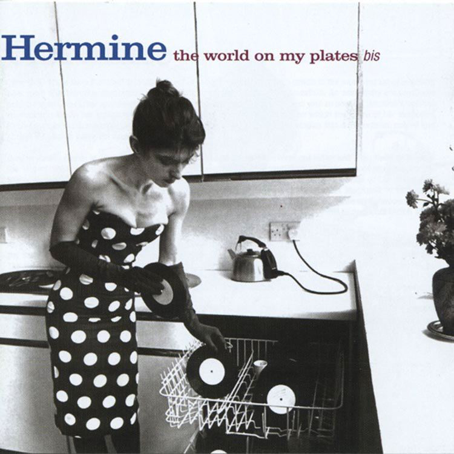

Day 45

Hermine ◆ TV Lovers ◆ The World On My Plates ◆ 1982
看 Emacs 博客的时候看到博主发了些“七月买的音乐”，里面有张 Hermine 的专辑封面大图。我这么肤浅的人当然立刻就去油管查了。虽然感觉歌曲没有很惊艳，但是之后油管自动排的歌单里有这首 “TV Lovers” 很棒。
博客里看到的封面是下面这张。一张唱片如果封面好看，只要里面有一两首感兴趣歌的我就会买orz。封面一般的话就会斟酌一二，不好看的话有好听的歌也很难下决心买（